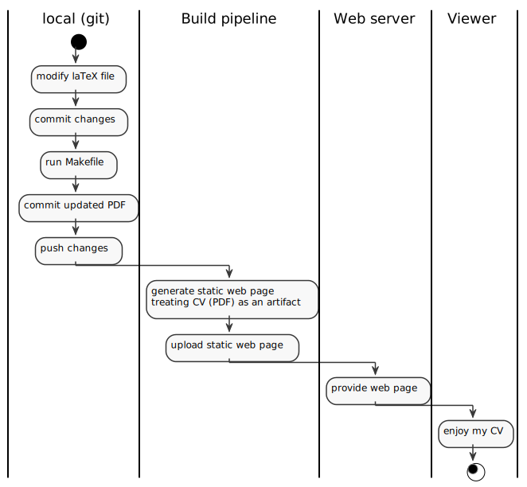
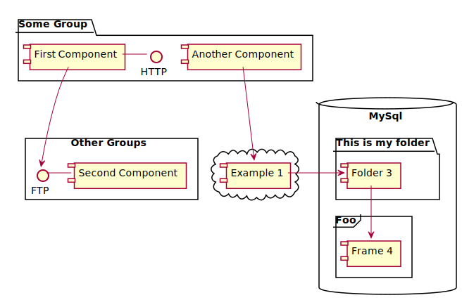

Diagrammes
Diagrammes
a |
b |
c |
1 |
2 |
3 |

UML Sequence diagram
Figure 2. sequence
Use case diagram

Figure 3. use case
Activity diagram
Figure 7. activity
Another activity diagram

Figure 8. Process
Let’s go wide ?
Figure 9. wide relatons
Component diagram

Figure 10. components
State diagram
Figure 11. state
Work Breakdown Structure
Figure 12. wbs
Timing diagram
Figure 13. time
Mind Map
Figure 14. mind
Gantt diagram
Figure 15. gantt
Chimie
chem
\$\ce{H_2O}\$
Maths
Inline equations
Inline equation: \$e^{ i \theta_1} = \cos{\theta_1} + i \sin{\theta_1}\$
Block equation:
equ1
\$\frac{\partial^2 u}{\partial x^2} = \frac{1}{c^2} \frac{\partial^2 u}{\partial t^2}\$
Equations in normal blocks
equ2
\[k_{n+1} = n^2 + k_n^2 - k_{n-1}\]
Some useful text! Formula for quadratic root:
equ3
\$x = \frac{-b \pm \sqrt{b^2 - 4ac}}{2a}\$
Inline equation works too! \(a^2+b^2=c^2\). Or as stem \$a^2+b^2=c^2\$. Pretty nice, huh?